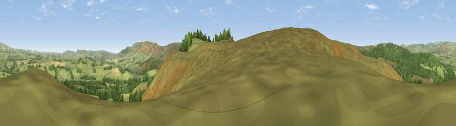

Viewpoint near Hepple
#11428 in England · top 36% of its area beats it · near HeppleWhere it is
The exact computed spot (NT 95225 00925). Click the marker for map links.
The view, rendered

A 360° render of this exact spot computed from the terrain model, tree cover and land cover — summer colours, afternoon light, calibrated against photographs of famous viewpoints. Real trees, hedges and buildings will differ in detail.
The panorama
Grey silhouette: terrain skyline in each direction (720 bearings, Earth curvature and refraction included). Dashed green: skyline with trees (+15 m) and buildings (+8 m) as obstacles. Blue strip: how far the ground is visible on each bearing.
Where the view opens
Wedge length = distance to the farthest visible ground on that bearing (vegetation-aware). Rings at 10, 25 and 50 km.
What fills the view
80% grassland · 18% woodland · 2% cropland
Angular shares of the visible panorama (visual magnitude), not map area. Landscape diversity 0.25 (0–1 Shannon).
Key numbers
More beautiful places nearby
The staircase of upgrades: each row has a higher view potential than everything closer. Driving times are estimates from straight-line distance, calibrated against real road routing — check an actual route before setting out.
| Place | Direction | Drive | Score |
|---|---|---|---|
| Viewpoint near Hepple | WSW · 0 km | ~1 min | 65.6 |
| Dues Hill | SSE · 1 km | ~2 min | 68.2 |
| Viewpoint c12060_7857 | NW · 3 km | ~8 min | 70.4 |
| Cold Law | NW · 4 km | ~8 min | 76.1 |
| Darden Rigg | SE · 6 km | ~12 min | 77.0 |
| Viewpoint near Hepple | ESE · 6 km | ~14 min | 82.4 |
| Viewpoint c12273_7856 | N · 13 km | ~24 min | 83.7 |
| Viewpoint c12396_7887 | N · 19 km | ~32 min | 85.7 |
55.30240, -2.07676 · source: screening · position refined by local search. Computed location — check access rights before visiting.